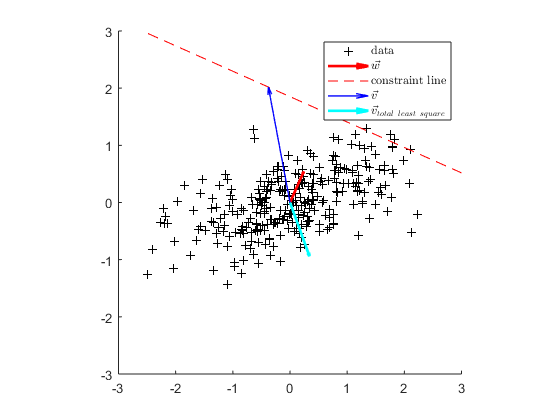

Contents
close all; clear
1 Trichromacy
load colMatch.mat;
- a)
Subjects match a random spectrum to the 3 primaries with 3 knob settings:
N=31; randomLight=rand(N,1); matches=humanColorMatcher(randomLight,P)
matches =
0.9197
-0.5936
1.1206
What subject actually generated from primaries is
matchLight = P*matches;
And the actually testing wavelength spectrum is
T=table; T.matchLight=matchLight;T.randomLight=randomLight; disp(T)
matchLight randomLight
__________ ___________
0.38773 0.22619
0.46237 0.38462
0.48169 0.58299
0.49337 0.25181
0.4861 0.29044
0.48543 0.61709
0.48472 0.26528
0.48585 0.82438
0.49134 0.98266
0.5145 0.73025
0.57715 0.34388
0.66721 0.58407
0.70833 0.10777
0.67556 0.90631
0.61323 0.87965
0.55356 0.81776
0.49097 0.26073
0.43348 0.59436
0.38824 0.022513
0.34318 0.42526
0.29234 0.31272
0.25581 0.16148
0.23051 0.17877
0.21823 0.42289
0.223 0.094229
0.25527 0.59852
0.31857 0.47092
0.39476 0.69595
0.45607 0.69989
0.49681 0.63853
0.5178 0.033604
Compare them in a single plot:
figure;hold on plot(randomLight) plot(matchLight) legend('randomLight','matchLight')

The two spectra look the same to the subject although they are acutually different,
because the dimension of the spectra (31) is much higher than human color perception (3). there are much more different spectra that have the same projection in lower dimension color perception space.
- b)
The human matcher can be modeled by a matrix .
expLight=eye(N); M=humanColorMatcher(expLight,P);
M_transpose=M'
M_transpose =
0.0656 0.0008 -0.0384
0.1369 0.0014 -0.0798
0.2490 0.0014 -0.1439
0.3403 -0.0027 -0.1913
0.3741 -0.0125 -0.1989
0.3421 -0.0261 -0.1643
0.2964 -0.0447 -0.1157
0.2520 -0.0734 -0.0538
0.1629 -0.1025 0.0381
0.0856 -0.1340 0.1299
0.0341 -0.1826 0.2335
-0.0061 -0.2512 0.3643
-0.0394 -0.3059 0.4825
-0.0564 -0.3100 0.5278
-0.0632 -0.2725 0.5122
-0.0637 -0.2015 0.4479
-0.0573 -0.1016 0.3417
-0.0485 0.0225 0.2004
-0.0356 0.1553 0.0397
-0.0220 0.2748 -0.1140
-0.0102 0.3542 -0.2281
-0.0021 0.3761 -0.2816
0.0021 0.3418 -0.2739
0.0033 0.2663 -0.2209
0.0031 0.1899 -0.1608
0.0023 0.1221 -0.1047
0.0014 0.0712 -0.0613
0.0008 0.0380 -0.0329
0.0004 0.0206 -0.0179
0.0002 0.0099 -0.0086
0.0001 0.0051 -0.0045
- Verification
for ii = 1:5 disp(['test light',num2str(ii)]) randomLight=rand(N,1); matchesFunc=humanColorMatcher(randomLight,P) matchesMatx=M*randomLight sprintf('they are same!\n\n') end
test light1
matchesFunc =
1.2835
0.5716
-0.3948
matchesMatx =
1.2835
0.5716
-0.3948
ans =
'they are same!
'
test light2
matchesFunc =
1.0426
-0.0640
0.4589
matchesMatx =
1.0426
-0.0640
0.4589
ans =
'they are same!
'
test light3
matchesFunc =
0.7954
0.0549
0.6105
matchesMatx =
0.7954
0.0549
0.6105
ans =
'they are same!
'
test light4
matchesFunc =
1.0238
0.0049
0.3720
matchesMatx =
1.0238
0.0049
0.3720
ans =
'they are same!
'
test light5
matchesFunc =
1.1180
0.2671
0.0946
matchesMatx =
1.1180
0.2671
0.0946
ans =
'they are same!
'
- c)
figure; plot(Cones') legend('L (red)','M (green)','S (blue)')
for an random wavelength spectrum
randomLight=rand(N,1);
The subject match it with another spectrum generated from primaries
matches=M*randomLight; matchingLight = P*matches; T=table; T.matchLight=matchingLight;T.randomLight=randomLight; disp(T)
matchLight randomLight
__________ ___________
0.47807 0.39118
0.57196 0.76911
0.5943 0.39679
0.60396 0.80851
0.59586 0.75508
0.59072 0.3774
0.58611 0.21602
0.58266 0.79041
0.58165 0.9493
0.59549 0.32757
0.64192 0.67126
0.70888 0.43864
0.73653 0.8335
0.7167 0.76885
0.68677 0.16725
0.66107 0.86198
0.62402 0.98987
0.5888 0.51442
0.56788 0.88428
0.54635 0.58803
0.51582 0.15475
0.49465 0.19986
0.47621 0.40695
0.4702 0.74871
0.48367 0.82558
0.52835 0.78996
0.60573 0.31852
0.69337 0.53406
0.761 0.089951
0.80387 0.11171
0.82675 0.13629
Two spectra produce equal cone absorption
absorptionRandomLight = Cones*randomLight; absorptionMatchLight = Cones*matchingLight; T=table; T.absorptionRandomLight=absorptionRandomLight; T.absorptionMatchLight=absorptionMatchLight; disp(T)
absorptionRandomLight absorptionMatchLight
_____________________ ____________________
6.7701 6.7701
5.8512 5.8512
3.925 3.925
because for any pair of light ( ) that map to the same knob settings
) that map to the same knob settings
In other words, is in 's null space.
If cones matching matrix  has the same null space as , then
has the same null space as , then
would also hold true, which means that any pair of light that elicits the same behavioral response, i.e, knob settings, produces the same cone absorption, vice versa.
From SVD we can get the two null space,
[~,~,V_M]=svd(M); [~,~,V_cone]=svd(Cones); null_M = V_M(:,4:end) null_cone = V_M(:,4:end)
null_M =
Columns 1 through 7
-0.4021 -0.4430 -0.4065 -0.3541 -0.3033 -0.1976 -0.1044
-0.0727 -0.0708 -0.0508 -0.0229 0.0145 0.0624 0.1102
-0.1619 -0.1804 -0.1685 -0.1518 -0.1413 -0.1164 -0.1037
0.8423 -0.1737 -0.1594 -0.1389 -0.1192 -0.0783 -0.0426
-0.1734 0.8089 -0.1755 -0.1531 -0.1317 -0.0871 -0.0482
-0.1586 -0.1749 0.8392 -0.1407 -0.1215 -0.0812 -0.0461
-0.1374 -0.1518 -0.1399 0.8772 -0.1069 -0.0726 -0.0430
-0.1170 -0.1296 -0.1200 -0.1061 0.9064 -0.0656 -0.0418
-0.0763 -0.0850 -0.0795 -0.0716 -0.0652 0.9511 -0.0356
-0.0413 -0.0469 -0.0450 -0.0423 -0.0414 -0.0355 0.9684
-0.0188 -0.0226 -0.0235 -0.0248 -0.0284 -0.0304 -0.0341
-0.0024 -0.0052 -0.0087 -0.0136 -0.0218 -0.0310 -0.0419
0.0103 0.0081 0.0025 -0.0053 -0.0173 -0.0325 -0.0497
0.0156 0.0138 0.0075 -0.0013 -0.0146 -0.0323 -0.0522
0.0167 0.0153 0.0093 0.0008 -0.0120 -0.0295 -0.0494
0.0153 0.0144 0.0093 0.0022 -0.0086 -0.0242 -0.0421
0.0110 0.0105 0.0071 0.0023 -0.0053 -0.0171 -0.0312
0.0060 0.0061 0.0049 0.0029 -0.0006 -0.0076 -0.0167
-0.0003 0.0004 0.0015 0.0028 0.0039 0.0026 -0.0006
-0.0063 -0.0050 -0.0017 0.0026 0.0080 0.0122 0.0147
-0.0106 -0.0090 -0.0042 0.0024 0.0108 0.0190 0.0259
-0.0125 -0.0108 -0.0054 0.0020 0.0117 0.0218 0.0309
-0.0119 -0.0104 -0.0053 0.0016 0.0108 0.0206 0.0296
-0.0095 -0.0083 -0.0043 0.0011 0.0084 0.0163 0.0237
-0.0069 -0.0060 -0.0032 0.0008 0.0060 0.0118 0.0172
-0.0045 -0.0039 -0.0021 0.0005 0.0039 0.0076 0.0111
-0.0026 -0.0023 -0.0012 0.0003 0.0023 0.0045 0.0065
-0.0014 -0.0012 -0.0007 0.0001 0.0012 0.0024 0.0035
-0.0008 -0.0007 -0.0004 0.0001 0.0007 0.0013 0.0019
-0.0004 -0.0003 -0.0002 0.0000 0.0003 0.0006 0.0009
-0.0002 -0.0002 -0.0001 0.0000 0.0002 0.0003 0.0005
Columns 8 through 14
-0.0399 0.0141 0.0653 0.1004 0.1247 0.1422 0.1525
0.1690 0.2450 0.3068 0.3165 0.2838 0.2173 0.1216
-0.1175 -0.1574 -0.2099 -0.2529 -0.2817 -0.2974 -0.3034
-0.0188 0.0002 0.0173 0.0285 0.0359 0.0411 0.0437
-0.0225 -0.0024 0.0159 0.0280 0.0363 0.0426 0.0464
-0.0234 -0.0062 0.0095 0.0204 0.0284 0.0351 0.0399
-0.0246 -0.0114 0.0007 0.0097 0.0173 0.0245 0.0307
-0.0281 -0.0199 -0.0122 -0.0053 0.0020 0.0102 0.0187
-0.0301 -0.0297 -0.0293 -0.0263 -0.0205 -0.0120 -0.0016
-0.0339 -0.0413 -0.0480 -0.0490 -0.0446 -0.0356 -0.0229
0.9565 -0.0591 -0.0735 -0.0785 -0.0748 -0.0641 -0.0475
-0.0594 0.9150 -0.1091 -0.1188 -0.1157 -0.1022 -0.0799
-0.0744 -0.1093 0.8573 -0.1574 -0.1555 -0.1402 -0.1136
-0.0799 -0.1191 -0.1572 0.8248 -0.1755 -0.1613 -0.1348
-0.0770 -0.1161 -0.1549 -0.1749 0.8221 -0.1670 -0.1443
-0.0671 -0.1026 -0.1391 -0.1598 -0.1660 0.8398 -0.1444
-0.0512 -0.0803 -0.1117 -0.1322 -0.1420 -0.1429 0.8635
-0.0300 -0.0501 -0.0741 -0.0935 -0.1072 -0.1161 -0.1213
-0.0061 -0.0156 -0.0308 -0.0481 -0.0656 -0.0828 -0.1001
0.0168 0.0176 0.0115 -0.0032 -0.0235 -0.0478 -0.0761
0.0339 0.0426 0.0439 0.0319 0.0105 -0.0182 -0.0535
0.0418 0.0549 0.0607 0.0514 0.0310 0.0018 -0.0352
0.0407 0.0543 0.0616 0.0547 0.0371 0.0112 -0.0221
0.0328 0.0442 0.0507 0.0459 0.0327 0.0127 -0.0131
0.0239 0.0323 0.0373 0.0342 0.0250 0.0109 -0.0076
0.0156 0.0211 0.0244 0.0226 0.0167 0.0077 -0.0042
0.0091 0.0124 0.0144 0.0133 0.0099 0.0046 -0.0022
0.0049 0.0066 0.0077 0.0072 0.0054 0.0026 -0.0011
0.0027 0.0036 0.0042 0.0039 0.0029 0.0014 -0.0006
0.0013 0.0017 0.0020 0.0019 0.0014 0.0007 -0.0003
0.0007 0.0009 0.0011 0.0010 0.0007 0.0004 -0.0001
Columns 15 through 21
0.1598 0.1599 0.1534 0.1407 0.1218 0.0981 0.0712
0.0019 -0.1275 -0.2447 -0.3239 -0.3481 -0.3182 -0.2487
-0.2969 -0.2794 -0.2515 -0.2172 -0.1788 -0.1388 -0.0983
0.0456 0.0453 0.0431 0.0392 0.0337 0.0271 0.0196
0.0497 0.0505 0.0492 0.0458 0.0400 0.0325 0.0237
0.0446 0.0473 0.0479 0.0459 0.0411 0.0339 0.0250
0.0373 0.0425 0.0456 0.0458 0.0423 0.0356 0.0265
0.0286 0.0376 0.0446 0.0479 0.0461 0.0398 0.0301
0.0114 0.0245 0.0360 0.0431 0.0442 0.0395 0.0304
-0.0065 0.0112 0.0275 0.0389 0.0429 0.0397 0.0313
-0.0255 -0.0009 0.0224 0.0395 0.0471 0.0451 0.0361
-0.0497 -0.0153 0.0178 0.0428 0.0551 0.0544 0.0442
-0.0768 -0.0342 0.0075 0.0396 0.0566 0.0581 0.0480
-0.0973 -0.0532 -0.0092 0.0255 0.0452 0.0494 0.0419
-0.1110 -0.0709 -0.0300 0.0034 0.0239 0.0310 0.0281
-0.1192 -0.0876 -0.0541 -0.0253 -0.0053 0.0050 0.0080
-0.1229 -0.1037 -0.0812 -0.0597 -0.0415 -0.0278 -0.0175
0.8778 -0.1186 -0.1103 -0.0984 -0.0832 -0.0659 -0.0473
-0.1166 0.8700 -0.1373 -0.1362 -0.1249 -0.1045 -0.0776
-0.1066 -0.1355 0.8427 -0.1665 -0.1592 -0.1367 -0.1032
-0.0934 -0.1330 -0.1651 0.8182 -0.1781 -0.1550 -0.1179
-0.0779 -0.1211 -0.1570 -0.1772 0.8241 -0.1543 -0.1179
-0.0611 -0.1008 -0.1343 -0.1537 -0.1539 0.8645 -0.1038
-0.0435 -0.0747 -0.1012 -0.1168 -0.1174 -0.1036 0.9205
-0.0293 -0.0516 -0.0706 -0.0819 -0.0826 -0.0731 -0.0561
-0.0181 -0.0325 -0.0448 -0.0521 -0.0527 -0.0466 -0.0358
-0.0104 -0.0188 -0.0260 -0.0303 -0.0306 -0.0271 -0.0208
-0.0055 -0.0100 -0.0138 -0.0161 -0.0163 -0.0144 -0.0111
-0.0029 -0.0053 -0.0074 -0.0087 -0.0088 -0.0078 -0.0060
-0.0014 -0.0026 -0.0036 -0.0042 -0.0042 -0.0037 -0.0029
-0.0007 -0.0013 -0.0018 -0.0022 -0.0022 -0.0019 -0.0015
Columns 22 through 28
0.0484 0.0302 0.0174 0.0092 0.0049 0.0024 0.0012
-0.1777 -0.1144 -0.0667 -0.0356 -0.0193 -0.0093 -0.0048
-0.0658 -0.0406 -0.0232 -0.0122 -0.0065 -0.0031 -0.0016
0.0133 0.0083 0.0048 0.0025 0.0013 0.0006 0.0003
0.0162 0.0101 0.0058 0.0031 0.0017 0.0008 0.0004
0.0172 0.0108 0.0062 0.0033 0.0018 0.0009 0.0004
0.0184 0.0116 0.0067 0.0036 0.0019 0.0009 0.0005
0.0211 0.0134 0.0078 0.0041 0.0022 0.0011 0.0006
0.0216 0.0138 0.0080 0.0043 0.0023 0.0011 0.0006
0.0224 0.0145 0.0085 0.0045 0.0024 0.0012 0.0006
0.0262 0.0170 0.0100 0.0053 0.0029 0.0014 0.0007
0.0323 0.0211 0.0124 0.0066 0.0036 0.0017 0.0009
0.0355 0.0233 0.0137 0.0074 0.0040 0.0019 0.0010
0.0314 0.0208 0.0123 0.0066 0.0036 0.0017 0.0009
0.0217 0.0146 0.0087 0.0047 0.0026 0.0012 0.0007
0.0075 0.0055 0.0034 0.0019 0.0011 0.0005 0.0003
-0.0106 -0.0061 -0.0034 -0.0017 -0.0009 -0.0004 -0.0002
-0.0320 -0.0199 -0.0114 -0.0060 -0.0032 -0.0015 -0.0008
-0.0537 -0.0339 -0.0196 -0.0104 -0.0056 -0.0027 -0.0014
-0.0721 -0.0458 -0.0265 -0.0141 -0.0076 -0.0037 -0.0019
-0.0828 -0.0527 -0.0306 -0.0163 -0.0088 -0.0042 -0.0022
-0.0831 -0.0530 -0.0308 -0.0164 -0.0088 -0.0043 -0.0022
-0.0732 -0.0468 -0.0272 -0.0145 -0.0078 -0.0038 -0.0019
-0.0561 -0.0359 -0.0209 -0.0111 -0.0060 -0.0029 -0.0015
0.9604 -0.0253 -0.0147 -0.0079 -0.0042 -0.0020 -0.0011
-0.0253 0.9838 -0.0094 -0.0050 -0.0027 -0.0013 -0.0007
-0.0147 -0.0094 0.9945 -0.0029 -0.0016 -0.0008 -0.0004
-0.0078 -0.0050 -0.0029 0.9984 -0.0008 -0.0004 -0.0002
-0.0042 -0.0027 -0.0016 -0.0008 0.9995 -0.0002 -0.0001
-0.0020 -0.0013 -0.0008 -0.0004 -0.0002 0.9999 -0.0001
-0.0011 -0.0007 -0.0004 -0.0002 -0.0001 -0.0001 1.0000
null_cone =
Columns 1 through 7
-0.4021 -0.4430 -0.4065 -0.3541 -0.3033 -0.1976 -0.1044
-0.0727 -0.0708 -0.0508 -0.0229 0.0145 0.0624 0.1102
-0.1619 -0.1804 -0.1685 -0.1518 -0.1413 -0.1164 -0.1037
0.8423 -0.1737 -0.1594 -0.1389 -0.1192 -0.0783 -0.0426
-0.1734 0.8089 -0.1755 -0.1531 -0.1317 -0.0871 -0.0482
-0.1586 -0.1749 0.8392 -0.1407 -0.1215 -0.0812 -0.0461
-0.1374 -0.1518 -0.1399 0.8772 -0.1069 -0.0726 -0.0430
-0.1170 -0.1296 -0.1200 -0.1061 0.9064 -0.0656 -0.0418
-0.0763 -0.0850 -0.0795 -0.0716 -0.0652 0.9511 -0.0356
-0.0413 -0.0469 -0.0450 -0.0423 -0.0414 -0.0355 0.9684
-0.0188 -0.0226 -0.0235 -0.0248 -0.0284 -0.0304 -0.0341
-0.0024 -0.0052 -0.0087 -0.0136 -0.0218 -0.0310 -0.0419
0.0103 0.0081 0.0025 -0.0053 -0.0173 -0.0325 -0.0497
0.0156 0.0138 0.0075 -0.0013 -0.0146 -0.0323 -0.0522
0.0167 0.0153 0.0093 0.0008 -0.0120 -0.0295 -0.0494
0.0153 0.0144 0.0093 0.0022 -0.0086 -0.0242 -0.0421
0.0110 0.0105 0.0071 0.0023 -0.0053 -0.0171 -0.0312
0.0060 0.0061 0.0049 0.0029 -0.0006 -0.0076 -0.0167
-0.0003 0.0004 0.0015 0.0028 0.0039 0.0026 -0.0006
-0.0063 -0.0050 -0.0017 0.0026 0.0080 0.0122 0.0147
-0.0106 -0.0090 -0.0042 0.0024 0.0108 0.0190 0.0259
-0.0125 -0.0108 -0.0054 0.0020 0.0117 0.0218 0.0309
-0.0119 -0.0104 -0.0053 0.0016 0.0108 0.0206 0.0296
-0.0095 -0.0083 -0.0043 0.0011 0.0084 0.0163 0.0237
-0.0069 -0.0060 -0.0032 0.0008 0.0060 0.0118 0.0172
-0.0045 -0.0039 -0.0021 0.0005 0.0039 0.0076 0.0111
-0.0026 -0.0023 -0.0012 0.0003 0.0023 0.0045 0.0065
-0.0014 -0.0012 -0.0007 0.0001 0.0012 0.0024 0.0035
-0.0008 -0.0007 -0.0004 0.0001 0.0007 0.0013 0.0019
-0.0004 -0.0003 -0.0002 0.0000 0.0003 0.0006 0.0009
-0.0002 -0.0002 -0.0001 0.0000 0.0002 0.0003 0.0005
Columns 8 through 14
-0.0399 0.0141 0.0653 0.1004 0.1247 0.1422 0.1525
0.1690 0.2450 0.3068 0.3165 0.2838 0.2173 0.1216
-0.1175 -0.1574 -0.2099 -0.2529 -0.2817 -0.2974 -0.3034
-0.0188 0.0002 0.0173 0.0285 0.0359 0.0411 0.0437
-0.0225 -0.0024 0.0159 0.0280 0.0363 0.0426 0.0464
-0.0234 -0.0062 0.0095 0.0204 0.0284 0.0351 0.0399
-0.0246 -0.0114 0.0007 0.0097 0.0173 0.0245 0.0307
-0.0281 -0.0199 -0.0122 -0.0053 0.0020 0.0102 0.0187
-0.0301 -0.0297 -0.0293 -0.0263 -0.0205 -0.0120 -0.0016
-0.0339 -0.0413 -0.0480 -0.0490 -0.0446 -0.0356 -0.0229
0.9565 -0.0591 -0.0735 -0.0785 -0.0748 -0.0641 -0.0475
-0.0594 0.9150 -0.1091 -0.1188 -0.1157 -0.1022 -0.0799
-0.0744 -0.1093 0.8573 -0.1574 -0.1555 -0.1402 -0.1136
-0.0799 -0.1191 -0.1572 0.8248 -0.1755 -0.1613 -0.1348
-0.0770 -0.1161 -0.1549 -0.1749 0.8221 -0.1670 -0.1443
-0.0671 -0.1026 -0.1391 -0.1598 -0.1660 0.8398 -0.1444
-0.0512 -0.0803 -0.1117 -0.1322 -0.1420 -0.1429 0.8635
-0.0300 -0.0501 -0.0741 -0.0935 -0.1072 -0.1161 -0.1213
-0.0061 -0.0156 -0.0308 -0.0481 -0.0656 -0.0828 -0.1001
0.0168 0.0176 0.0115 -0.0032 -0.0235 -0.0478 -0.0761
0.0339 0.0426 0.0439 0.0319 0.0105 -0.0182 -0.0535
0.0418 0.0549 0.0607 0.0514 0.0310 0.0018 -0.0352
0.0407 0.0543 0.0616 0.0547 0.0371 0.0112 -0.0221
0.0328 0.0442 0.0507 0.0459 0.0327 0.0127 -0.0131
0.0239 0.0323 0.0373 0.0342 0.0250 0.0109 -0.0076
0.0156 0.0211 0.0244 0.0226 0.0167 0.0077 -0.0042
0.0091 0.0124 0.0144 0.0133 0.0099 0.0046 -0.0022
0.0049 0.0066 0.0077 0.0072 0.0054 0.0026 -0.0011
0.0027 0.0036 0.0042 0.0039 0.0029 0.0014 -0.0006
0.0013 0.0017 0.0020 0.0019 0.0014 0.0007 -0.0003
0.0007 0.0009 0.0011 0.0010 0.0007 0.0004 -0.0001
Columns 15 through 21
0.1598 0.1599 0.1534 0.1407 0.1218 0.0981 0.0712
0.0019 -0.1275 -0.2447 -0.3239 -0.3481 -0.3182 -0.2487
-0.2969 -0.2794 -0.2515 -0.2172 -0.1788 -0.1388 -0.0983
0.0456 0.0453 0.0431 0.0392 0.0337 0.0271 0.0196
0.0497 0.0505 0.0492 0.0458 0.0400 0.0325 0.0237
0.0446 0.0473 0.0479 0.0459 0.0411 0.0339 0.0250
0.0373 0.0425 0.0456 0.0458 0.0423 0.0356 0.0265
0.0286 0.0376 0.0446 0.0479 0.0461 0.0398 0.0301
0.0114 0.0245 0.0360 0.0431 0.0442 0.0395 0.0304
-0.0065 0.0112 0.0275 0.0389 0.0429 0.0397 0.0313
-0.0255 -0.0009 0.0224 0.0395 0.0471 0.0451 0.0361
-0.0497 -0.0153 0.0178 0.0428 0.0551 0.0544 0.0442
-0.0768 -0.0342 0.0075 0.0396 0.0566 0.0581 0.0480
-0.0973 -0.0532 -0.0092 0.0255 0.0452 0.0494 0.0419
-0.1110 -0.0709 -0.0300 0.0034 0.0239 0.0310 0.0281
-0.1192 -0.0876 -0.0541 -0.0253 -0.0053 0.0050 0.0080
-0.1229 -0.1037 -0.0812 -0.0597 -0.0415 -0.0278 -0.0175
0.8778 -0.1186 -0.1103 -0.0984 -0.0832 -0.0659 -0.0473
-0.1166 0.8700 -0.1373 -0.1362 -0.1249 -0.1045 -0.0776
-0.1066 -0.1355 0.8427 -0.1665 -0.1592 -0.1367 -0.1032
-0.0934 -0.1330 -0.1651 0.8182 -0.1781 -0.1550 -0.1179
-0.0779 -0.1211 -0.1570 -0.1772 0.8241 -0.1543 -0.1179
-0.0611 -0.1008 -0.1343 -0.1537 -0.1539 0.8645 -0.1038
-0.0435 -0.0747 -0.1012 -0.1168 -0.1174 -0.1036 0.9205
-0.0293 -0.0516 -0.0706 -0.0819 -0.0826 -0.0731 -0.0561
-0.0181 -0.0325 -0.0448 -0.0521 -0.0527 -0.0466 -0.0358
-0.0104 -0.0188 -0.0260 -0.0303 -0.0306 -0.0271 -0.0208
-0.0055 -0.0100 -0.0138 -0.0161 -0.0163 -0.0144 -0.0111
-0.0029 -0.0053 -0.0074 -0.0087 -0.0088 -0.0078 -0.0060
-0.0014 -0.0026 -0.0036 -0.0042 -0.0042 -0.0037 -0.0029
-0.0007 -0.0013 -0.0018 -0.0022 -0.0022 -0.0019 -0.0015
Columns 22 through 28
0.0484 0.0302 0.0174 0.0092 0.0049 0.0024 0.0012
-0.1777 -0.1144 -0.0667 -0.0356 -0.0193 -0.0093 -0.0048
-0.0658 -0.0406 -0.0232 -0.0122 -0.0065 -0.0031 -0.0016
0.0133 0.0083 0.0048 0.0025 0.0013 0.0006 0.0003
0.0162 0.0101 0.0058 0.0031 0.0017 0.0008 0.0004
0.0172 0.0108 0.0062 0.0033 0.0018 0.0009 0.0004
0.0184 0.0116 0.0067 0.0036 0.0019 0.0009 0.0005
0.0211 0.0134 0.0078 0.0041 0.0022 0.0011 0.0006
0.0216 0.0138 0.0080 0.0043 0.0023 0.0011 0.0006
0.0224 0.0145 0.0085 0.0045 0.0024 0.0012 0.0006
0.0262 0.0170 0.0100 0.0053 0.0029 0.0014 0.0007
0.0323 0.0211 0.0124 0.0066 0.0036 0.0017 0.0009
0.0355 0.0233 0.0137 0.0074 0.0040 0.0019 0.0010
0.0314 0.0208 0.0123 0.0066 0.0036 0.0017 0.0009
0.0217 0.0146 0.0087 0.0047 0.0026 0.0012 0.0007
0.0075 0.0055 0.0034 0.0019 0.0011 0.0005 0.0003
-0.0106 -0.0061 -0.0034 -0.0017 -0.0009 -0.0004 -0.0002
-0.0320 -0.0199 -0.0114 -0.0060 -0.0032 -0.0015 -0.0008
-0.0537 -0.0339 -0.0196 -0.0104 -0.0056 -0.0027 -0.0014
-0.0721 -0.0458 -0.0265 -0.0141 -0.0076 -0.0037 -0.0019
-0.0828 -0.0527 -0.0306 -0.0163 -0.0088 -0.0042 -0.0022
-0.0831 -0.0530 -0.0308 -0.0164 -0.0088 -0.0043 -0.0022
-0.0732 -0.0468 -0.0272 -0.0145 -0.0078 -0.0038 -0.0019
-0.0561 -0.0359 -0.0209 -0.0111 -0.0060 -0.0029 -0.0015
0.9604 -0.0253 -0.0147 -0.0079 -0.0042 -0.0020 -0.0011
-0.0253 0.9838 -0.0094 -0.0050 -0.0027 -0.0013 -0.0007
-0.0147 -0.0094 0.9945 -0.0029 -0.0016 -0.0008 -0.0004
-0.0078 -0.0050 -0.0029 0.9984 -0.0008 -0.0004 -0.0002
-0.0042 -0.0027 -0.0016 -0.0008 0.9995 -0.0002 -0.0001
-0.0020 -0.0013 -0.0008 -0.0004 -0.0002 0.9999 -0.0001
-0.0011 -0.0007 -0.0004 -0.0002 -0.0001 -0.0001 1.0000
the two null space are the same because there will be no more addtional dimensions when we add columns from one to the other
svd([null_M,null_cone])'
ans =
Columns 1 through 7
1.4142 1.4142 1.4142 1.4142 1.4142 1.4142 1.4142
Columns 8 through 14
1.4142 1.4142 1.4142 1.4142 1.4142 1.4142 1.4142
Columns 15 through 21
1.4142 1.4142 1.4142 1.4142 1.4142 1.4142 1.4142
Columns 22 through 28
1.4142 1.4142 1.4142 1.4142 1.4142 1.4142 1.4142
Columns 29 through 31
0.0000 0.0000 0.0000
There are still 28 = 31-3 non-zero singular values, as well as two null space respectively.
Alternatively, we can think of an arbitary spectrum and the spectrum that the subject match it with knob settings , which generate a combination of primaries,  .
.

Both spectra should produce the same cone absorption
for every .
There should always be a unique matching. So

So should be invertible, and is actually the color matching matrix,
M_hat = (Cones*P)\Cones;
error = M-M_hat;
all(all(error<1e-10)) % I don't use ==0 in order to avoid floatin point errors
ans = logical 1
which should have the same null space as C,
because for any  in 's null space,
in 's null space,
- d)
compare the responses between norm subjects and the patient.
randomLight=rand(N,5); % generate several test lights matchesNorm = humanColorMatcher(randomLight,P) % knob settings from normal subject matchesAlt = altHumanColorMatcher(randomLight,P) % from the patient
matchesNorm =
0.7641 1.5663 1.0409 0.6291 0.5067
-0.0794 -0.4827 0.2996 0.1978 -0.4086
1.0741 0.5080 -0.0434 0.4696 1.1582
matchesAlt =
0.6630 1.3841 0.8188 0.2360 0.3834
-1.2770 -2.6413 -2.3314 -4.4596 -1.8705
2.4551 2.9973 2.9907 5.8405 2.8441
They are totally different. I can't tell the pattern.
Cone absorptions for test light are
temp = Cones * randomLight;
c = {'L (red)';'M (green)';'S (blue)'};
T = table;T.cone = c;
for ii=1:5; eval(sprintf('T.l_%d = temp(:,ii);',ii)); end
disp(T)
cone l_1 l_2 l_3 l_4 l_5
___________ ______ ______ ______ ______ ______
'L (red)' 7.2837 4.5262 4.5526 5.3656 5.0995
'M (green)' 6.1556 4.2767 3.5243 4.2876 4.6517
'S (blue)' 3.0192 4.8706 3.3042 2.3424 2.118
and cone absorptions for mixtures of matching primaries (normal) are
temp=Cones * P * matchesNorm;
c = {'L (red)';'M (green)';'S (blue)'};
T = table;T.cone = c;
for ii=1:5; eval(sprintf('T.l_%d = temp(:,ii);',ii)); end
disp(T)
cone l_1 l_2 l_3 l_4 l_5
___________ ______ ______ ______ ______ ______
'L (red)' 7.2837 4.5262 4.5526 5.3656 5.0995
'M (green)' 6.1556 4.2767 3.5243 4.2876 4.6517
'S (blue)' 3.0192 4.8706 3.3042 2.3424 2.118
Same with that of the test light.
While cone absorptions for mixtures of matching primaries (patient) are
temp=Cones * P * matchesAlt;
c = {'L (red)';'M (green)';'S (blue)'};
T = table;T.cone = c;
for ii=1:5; eval(sprintf('T.l_%d = temp(:,ii);',ii)); end
disp(T)
cone l_1 l_2 l_3 l_4 l_5
___________ ______ ______ ______ ______ ______
'L (red)' 7.2837 4.5262 4.5526 5.3656 5.0995
'M (green)' 7.3155 6.3674 6.0726 8.7986 6.0676
'S (blue)' 3.0192 4.8706 3.3042 2.3424 2.118
For red and blue cones, absorptions are the same but green is different, so the patient may miss copies of green cone.
2 2D polynomial regression
load regress2.mat
- a)
x=D(:,1);y=D(:,2);z=D(:,3);
X=reshape(x,13,13);
Y=reshape(y,13,13);
Z=reshape(z,13,13);
figure;surf(X,Y,Z)
rotate3d on

- b) prepare predictors
p0 = ones(169,1);
p1 = [p0,x,y];
x2 = x.^2;
y2 = y.^2;
xy = x.*y;
p2 = [p1,x2,xy,y2];
x3 = x.^3;
y3 = y.^3;
x2y= x2.*y;
xy2= x.*y2;
p3 = [p2,x3,x2y,xy2,y3];
% regression
beta0 = (p0'*p0)\p0'*z;
beta1 = (p1'*p1)\p1'*z;
beta2 = (p2'*p2)\p2'*z;
beta3 = (p3'*p3)\p3'*z;
- order 0
z_hat = p0*beta0; figure;hold on scatter3(x,y,z) Z = reshape(z_hat,13,13); surf(X,Y,Z) view(3) rotate3d on

- order 1
z_hat = p1*beta1; figure;hold on scatter3(x,y,z) Z = reshape(z_hat,13,13); surf(X,Y,Z) view(3) rotate3d on

- order 2
z_hat = p2*beta2; figure;hold on scatter3(x,y,z) Z = reshape(z_hat,13,13); surf(X,Y,Z) view(3) rotate3d on

- order 3
z_hat = p3*beta3; figure;hold on scatter3(x,y,z) Z = reshape(z_hat,13,13); surf(X,Y,Z) view(3) rotate3d on

3rd order fit seems reasonable enough to capture the tilde-like trend of the data
If we plot the squared errors, we can see there is few large errors
SE = (z-z_hat).^2; figure;hist(SE)

mean squared error is small
MSE = mean(SE)
MSE = 2.0500e-04
We can see the contribution of each term,
z_hat_allTerm = p3*diag(beta3); % decompose z_hat, one term for every predictors importance=sqrt(sum(z_hat_allTerm.^2,1)); % calculate vector length of each term terms = {'constant','x','y','x2','xy','y2','x3','x2y','xy2','y3'}; T = table; T.term = terms'; T.contribution = importance'; format shorte;disp(T);format
term contribution
__________ ____________
'constant' 2.0556e+00
'x' 2.1797e+00
'y' 3.7223e-01
'x2' 1.3941e-02
'xy' 1.9273e-01
'y2' 3.4612e-01
'x3' 1.5516e+00
'x2y' 6.7283e-03
'xy2' 1.5088e+00
'y3' 4.9588e-02
term ,  and terms are not so important. If we drop them out:
and terms are not so important. If we drop them out:
p3_drop = p3(:,importance>5e-2); beta3_drop = (p3_drop'*p3_drop)\p3_drop'*z; z_hat_drop = p3_drop*beta3_drop; MSE_new = mean((z-z_hat_drop).^2)
MSE_new = 2.0785e-04
mean squared error only increase about 1%
3 Constrained Least Squares
load constrainedLS.mat
- a)
The original problem can be written as
s.t. , where 's nth row is
singular value decompose , keep only first 2 colomns of U and first two rows of , call it .
[~,S,V] = svd(data,'econ');
let  , and
, and
w_tilde = S\V'*w;
thus the problem can be rewritten as

s.t.  .
.
- b)
Solution:
The shortest vector that lie on the line perpendicular to should align with . So
v_tilde = w_tilde/norm(w_tilde)^2
v_tilde = -5.8205 -14.6384
figure; hold on data_tilde = (S*V'*data')'; % transform data in the same way as v scatter(data_tilde(:,1),data_tilde(:,2),'k+'); quiver(0,0,w_tilde(1),w_tilde(2),1,'r','LineWidth',2) cl_tilde = v_tilde + [w_tilde(2);-w_tilde(1)]*[-1000,1000]; % constraint line has a slope -w_tilde(1)/w_tilde(2) plot(cl_tilde(1,:),cl_tilde(2,:),'r--') quiver(0,0,v_tilde(1),v_tilde(2),1,'b') leg=legend('data','$\tilde{w}$','constraint line','$\tilde{v}$'); set(leg,'Interpreter','latex') axis equal xlim([-40,40]) ylim([-40,40]) hold off

- c)
In the original space
v = V/S*v_tilde
v =
-0.3782
2.0200
figure; hold on data_tilde = (S*V'*data')'; scatter(data(:,1),data(:,2),'k+') % first two columns of U is just transformed D quiver(0,0,w(1),w(2),1,'r','LineWidth',2) cl = w/norm(w)^2 + [w(2);-w(1)]*[-1000,1000]; % constraint line has a slope -w(1)/w(2) % cl = V/S*cl_tilde; % the transformation to v is the same to all points on the constraint line plot(cl(1,:),cl(2,:),'r--') quiver(0,0,v(1),v(2),1,'b','LineWidth',2) leg=legend('data','$\vec{w}$','constraint line','$\vec{v}$'); set(leg,'Interpreter','latex') axis equal xlim([-3,3]) ylim([-3,3]) hold off

is not perpendicular to constraint line in the original space, although is still on the constraint line.
Total least square solution:
v_tls = V(:,end);
figure; hold on scatter(data(:,1),data(:,2),'k+') quiver(0,0,w(1),w(2),1,'r','LineWidth',2) plot(cl(1,:),cl(2,:),'r--') quiver(0,0,v(1),v(2),1,'b','LineWidth',1) quiver(0,0,v_tls(1),v_tls(2),1,'c','LineWidth',2) leg=legend('data','$\vec{w}$','constraint line','$\vec{v}$','$\vec{v}_{total\ least\ square}$'); set(leg,'Interpreter','latex') axis equal xlim([-3,3]) ylim([-3,3]) hold off
Solutions are different. But if we view the data cloud as a rectangle, both solutions are approximately alighed with the short edge of the rectangle.
4 Principal Components
load PCA.mat
- a)
figure; plot(M) xlabel('time') ylabel('mean spike count')

There are several clusters of neuron, within which cell responses are similar. For example, there are 4 neurons that linearly ramp up slowly from beginning and peak at about 30th intervel and than ramp down. There are 4 neurons that elicit large peak at the middle of the trail. There are are a bunch of neurons that response weakly throughout the trail.
- b)
M_ = M - repmat(mean(M),50,1); % substract mean [U,S,~] = svd(M_);S = diag(S); %SVD and extract singular values. figure;bar(S) t=title('singular values of $\tilde{M}$'); set(t,'Interpreter','latex')
"True" dimensionality of the response should be 3.
- c)
figure; plot(U(:,1:3)) xlabel('time') leg = legend('first eigenvector of $\tilde{M}\tilde{M}^T$',... 'second eigenvector of $\tilde{M}\tilde{M}^T$',... 'third eigenvector of $\tilde{M}\tilde{M}^T$'); set(leg,'Interpreter','latex')

first 3 eigenvectors looks like some period function (cos(t), sin(t) and -cos(2t))
the fourth eigenvector
figure; plot(U(:,4)) xlabel('time') legend('fourth eigenvector')
looks messy.
- d)
Extract first 3 principle component of the data.
figure; plot3(S(1)*U(:,1),S(2)*U(:,2),S(3)*U(:,3),'Marker','o'); xlabel('PC1');ylabel('PC2');zlabel('PC3') view(3) grid on rotate3d on

The trajectory forms a loop, composed of two half circle connected with an angle in the PC3 dimension.
close all